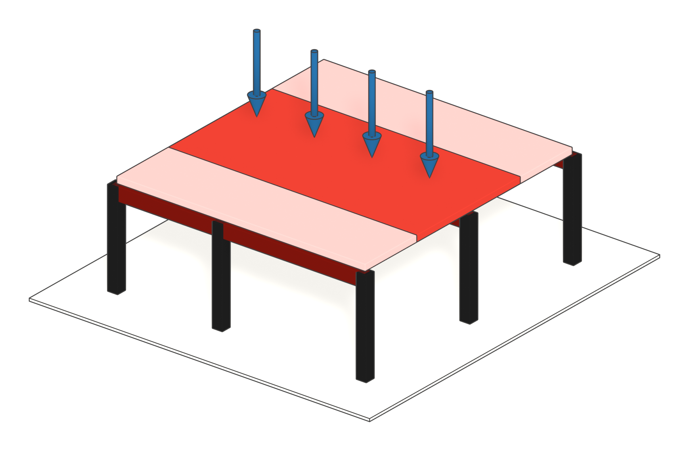

Lezione 1 - Dalla combinazione alla sezione
Cambia i dati e osserva come cambiano domanda, capacità e profilo scelto.
⬇ Scarica le slide (PDF) 63 pagine, 1,1 MBStessa maglia, tre materiali: apri il telaio
A. L'esempio svolto: la trave di un solaio

In alto lo schema statico: la trave, i vincoli e i carichi (somma di g₁, g₂, q con i coefficienti dell'SLU). Sotto il momento flettente: è la "domanda" che la sezione deve sopportare.
- LIVELLO 1Predimensionamento
h ≈ L / = mm (regola pratica: primo tentativo, per eccesso) - Carico di progetto (SLU)
pd = 1,3·g₁ + 1,5·g₂ + 1,5·q = kN/m - Domanda
MEd = pd·L² / β = kN·m (β = ) - Capacità del materiale
fyd = fyk / γM0 = MPa - Modulo di resistenza minimo
Wmin = MEd / fyd = ·10³ mm³ = cm³ - LIVELLO 2Profilo
- Verifica della freccia (SLE)
δ = k·pk·L⁴ / (384·E·Iy) ≤ L/250
Il peso proprio del profilo va compreso in g₁. Si dimensiona a flessione (Wmin) e poi si verifica la freccia con l'inerzia del profilo scelto: se non basta, si passa al profilo successivo. Taglio, stabilità e verifiche complete sono il livello 3 (Tecnica delle Costruzioni).
| Profilo | Wel,y [cm³] | Utilizzo Wmin/W | Massa [kg/m] |
|---|
B. Domanda e capacità: il margine
La verifica confronta due grandezze omogenee: la domanda D (l'effetto delle azioni) e la capacità C (ciò che la struttura sopporta). Due «scudi» le proteggono dall'incertezza: i valori caratteristici e i coefficienti parziali. La domanda si aumenta, Dd = γF·Dk; la capacità si riduce, Cd = Ck/γM. Si verifica che Dd ≤ Cd.
Tratteggiato: il valore caratteristico. Pieno: il valore di progetto, dopo il coefficiente parziale. Più incerta è la grandezza, più grande è il coefficiente (il calcestruzzo ha γM = 1,5, l'acciaio 1,05).
C. Unità di misura
kN ≈ kgf
kN/m² ≈ kgf/m²
Si usa 1 kgf = 9,81 N, quindi 1 kN ≈ 102 kgf.